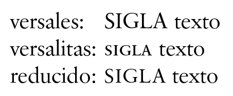

Siglas: ¿versal o versalita?
Versión: 1.3. 2012-11-15Las siglas plantean un interesante reto a la tipografía actual. De reciente aparición, su tratamiento ortotipográfico ha pasado por una evolución en la que se comenzó como cualquier otra abreviatura (O. N. U.), para reducir posteriormente el espaciado (O.N.U.) y finalmente suprimir los puntos (ONU).
La evolución sigue abierta, porque la composición en versales (es decir, en mayúsculas) tiene un doble problema: las letras son más grandes en las mayúsculas y sus trazos son por regla general más gruesos que los de las minúsculas (la ubicua Times es una de las peores a este respecto). Por ello, las siglas pueden crear «manchas» visuales en el texto que destruyen la uniformidad del gris tipográfico y que pueden distraer al lector.
La solución ideal en textos con muchas siglas o símbolos es emplear una familia tipográfica con poco contraste entre mayúsculas y minúsculas, pero no siempre es posible ni conveniente, pues puede haber otros factores que influyan en la elección de la fuente.
Desde los años ochenta, como poco, se ha aplicado en inglés la solución de componer las siglas con versalitas (versales del tamaño aproximado de la minúscula), una idea que recibió un especial apoyo de Robert Bringhurst en su obra The elements of typographical style. Si las versalitas son reales, se corrige el problema del gris tipográfico.
Sin embargo, desde el punto de vista ortotipográfico, la propuesta no deja de ser problemática, puesto que las versalitas han pasado a tener en el texto la doble función de mayúsculas disminuidas (que ya tenían, pero solo en folios y títulos) y de un tipo especial de minúsculas.
Más aún, hay siglas y símbolos que combinan mayúsculas y minúsculas (como ARNm), y la simple sustitución de mayúsculas por versalitas produce resultados descuadrados; la reducción de las minúsculas que algunos ortotipógrafos proponen es, simplemente, tipográficamente inaceptable, ya que perdemos el equilibrio por el que se supone se usan las versalitas.
Tampoco hay que olvidar que algunas letras son muy parecidas en versales y en minúsculas (c, o, s, v, w, x, z), de modo que una sigla como SO (‘sistema operativo’) puede no ser reconocible fácilmente como tal sigla si está versalitas.
Además, hay que tener en cuenta que no todas las familias tipográficas incluyen versalitas (y mucho menos versalitas cursivas), y las seudoversalitas, que algunos sistemas generan a partir de las versales por simple reducción, tiene los trazos demasiado finos.
En definitiva, por una razón u otra, hay bastantes ortotipógrafos, entre los cuales me encuentro yo, que consideran que las versalitas son una solución parcial, válida en ciertos casos, pero no en general. No es de extrañar que se haya experimentado con otras posibilidades.
En los últimos años está ganando popularidad la composición con una mayúscula algo menor y con una ligera prosa (espaciado entre letras). Esa pequeña reducción (cuyo valor exacto hay que tantear para conseguir un equilibrio correcto) iguala los trazos de las letras mayúsculas y minúsculas (al menos los de las astas más gruesas) y la prosa contribuye a que no se vea como un bloque monolítico. Una de las ventajas de este sistema es que la combinación de mayúsculas y minúsculas, que se da en algunas siglas, no queda demasiado descuadrada. En todo caso, si no se tienen versalitas reales, es preferible esta solución a las seudoversalitas.
En la siguiente ilustración se comparan las mayúsculas con las versalitas y las mayúsculas reducidas:

El problema sigue abierto y es probable que aparezcan nuevas soluciones. Quién sabe si, con el tiempo, el intermedio entre versales y versalitas se impone y se acaban incluyendo con su propio diseño en las familias tipográficas. (Curiosamente, en los últimos años ha ocurrido lo contrario, con una segunda variante de versalita aún más pequeña y llamada en inglés “petite capital”.)
Más…
- Las abreviaciones: siglas, abreviaturas, símbolos…
- Siglas bibliográficas
- Cursivas, negritas, versalitas…
- Los paréntesis
- Uso de la cursiva
- Uso de la redonda
- Uso de las minúsculas y mayúsculas
- Raya, menos y guion
- Kerning: el volado de las letras
- La economía ortotipográfica en las bibliografías
- Clasificaciones tipográficas